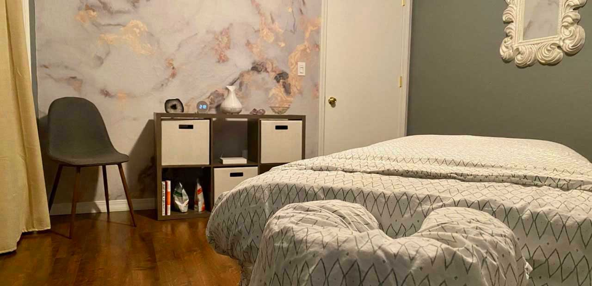
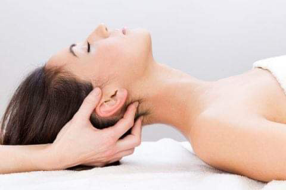

Treatment Options

Precision Neuromuscular Therapy
Precise and thorough examination of muscles to locate trigger points or muscle spasms and release. Once released, the benefits include decreased pain, improved circulation, and improved connective tissue flexibility and performance.

Deep Tissue
Bodywork of the fascia and deeper layers of connective tissue in the body using slow, sustained pressure at problem areas to relieve tension. Recommended for those with chronic stress, injuries, and active individuals. Soreness can be common after this type of bodywork. Drinking plenty of water afterwards is essential to help with the removal of released toxins along with aiding recovery.
Instrument Assisted Soft Tissue Mobilization (IASTM)
Use of a massage tool to break up connective tissue adhesions, assist with proper healing of injuries, relieve tension in the fascia and superficial muscles, and stimulate new oxygenated blood flow to areas. A little redness may be present up to 2-4 days after treatment.
Cup Therapy/Myofascial Decompression
The combination of manual therapy and negative pressure, through the skilled placement of cups, that focuses on the efficiency of fascial mobility and neuromuscular re-education to reduce pain, release connective tissue restrictions, and increase functional range of motion. Traditional cup therapy skills may also be utilized if warranted or requested. Cup marks are normal and can often be seen on the skin up to 2 weeks after treatment.

Sports Bodywork
Bodywork utilizing various techniques, such as fascial stretching, IASTM, cup therapy, and appropriate massage strokes targeted toward athletic clients. It is used to speed up the healing of injuries, injury prevention, prepare the body for athletic activity, and help muscles function properly to maximize performance.

Craniosacral Therapy
Light touch, at most about the weight of a nickel, to evaluate and facilitate the natural movement of cerebrospinal fluid and release restrictions. This modality has been shown to improve the functioning of the central nervous system, as well as many other systems of the body, such as digestive, nervous, musculoskeletal, respiratory, circulatory, and more.

Swedish Massage
Therapeutic relaxation techniques which include long gliding strokes, rolling, kneading, and percussive techniques to improve circulation and decrease pain, stress levels, and muscle adhesion.
*Various techniques will likely be combined into your unique treatment. Together we will determine the best treatment plan to meet your life and needs